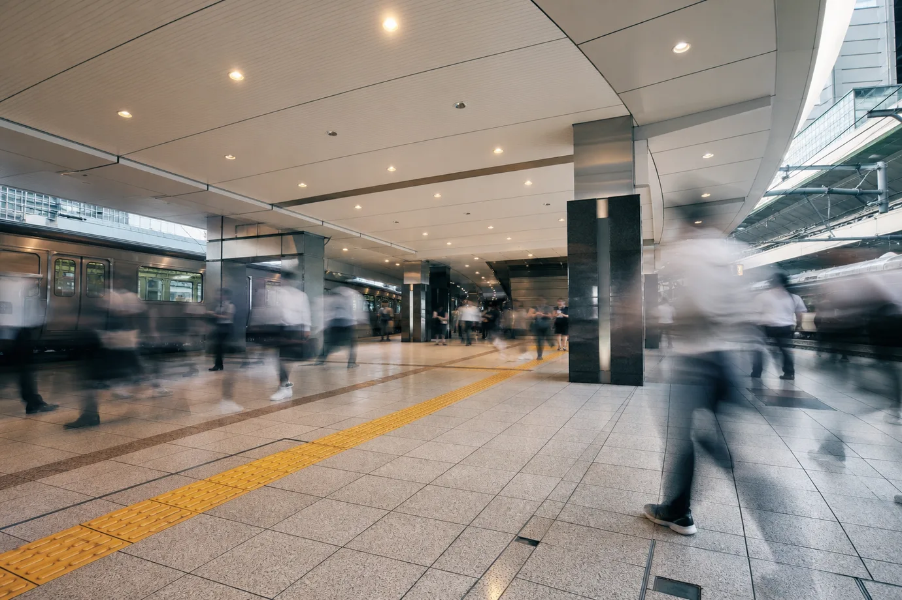
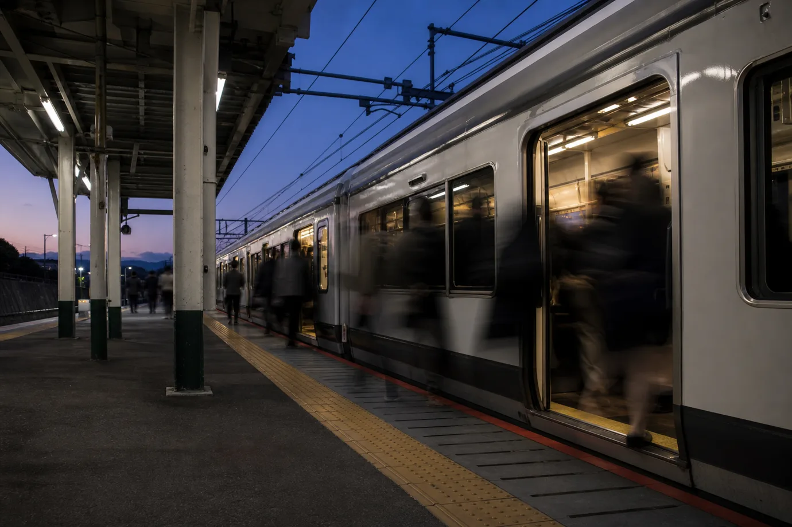
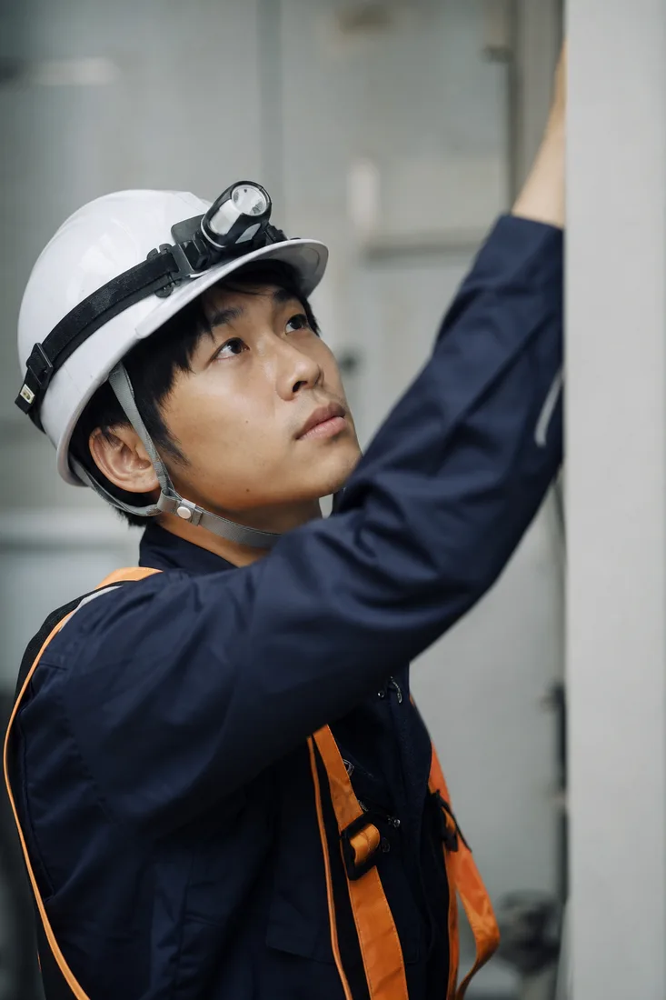
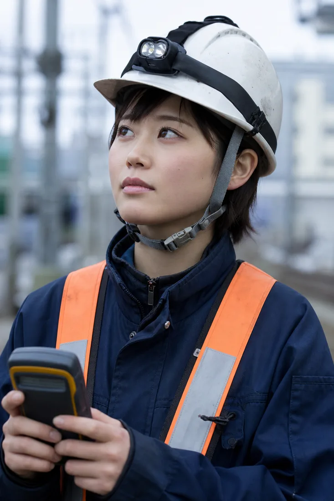
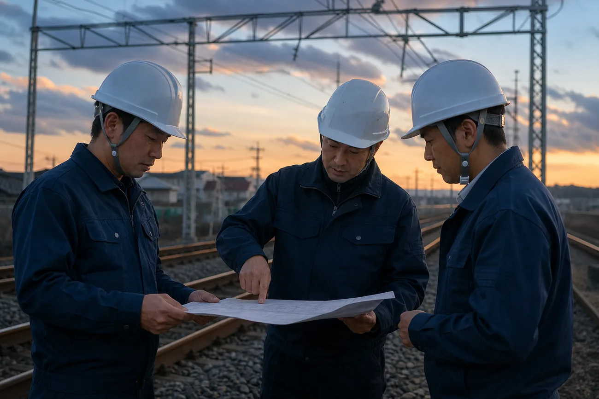
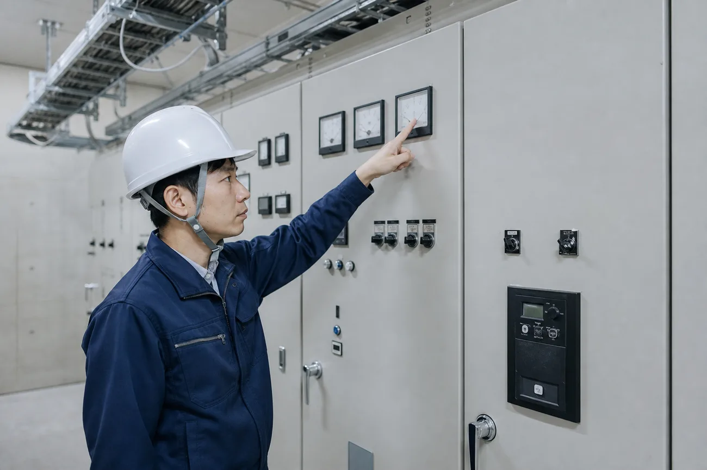

Our Mission
くらしの灯を、絶やさない。
Message
私たちセンデック電気システムは、鉄道と駅の電気設備を専門に手がける会社です。
北陸・信越の路線と駅で、電車を走らせる電気、改札を灯す電気を守り続けています。
この仕事に、華やかな瞬間はほとんどありません。
終電が過ぎた線路の上で、始発までに終わらせる。それが私たちの日常です。
それでも、朝いちばんの電車が定刻どおりに走り出すたび、自分たちの手が街のくらしを支えているのだと実感します。
くらしの灯を、絶やさない。
その一点で、私たちは六十年以上ここに立ち続けてきました。

会社を知るCompany
鉄道と駅の電気を、止めない。それがセンデックの仕事です。架線から変電、信号通信、駅の建築電気まで一貫して受け持ち、北陸・信越の毎日の移動を足もとから支えています。
仕事を知るWorks
鉄道と駅の電気工事を、計画から施工管理まで一貫して受け持ちます。
仲間と組み、現場で確かめながら技術を積み上げていく仕事です。
働く環境Environment
安心して働き続けられる制度と、技術を伸ばせる場を用意しています。
入社してからの毎日を、センデックの中から紹介します。
